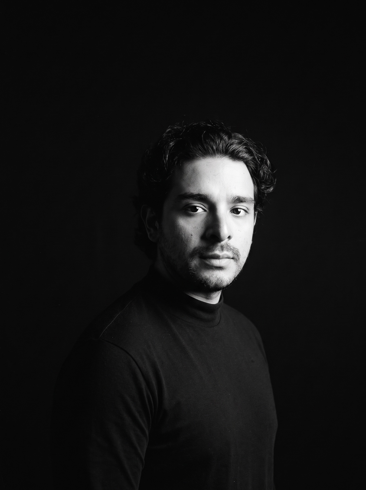
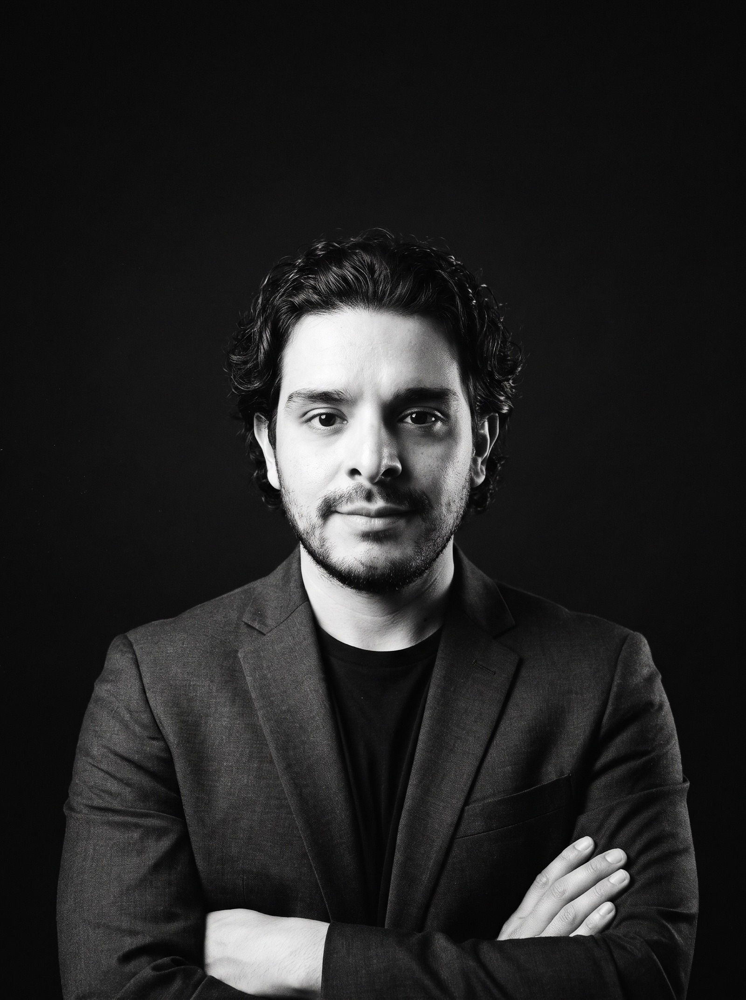
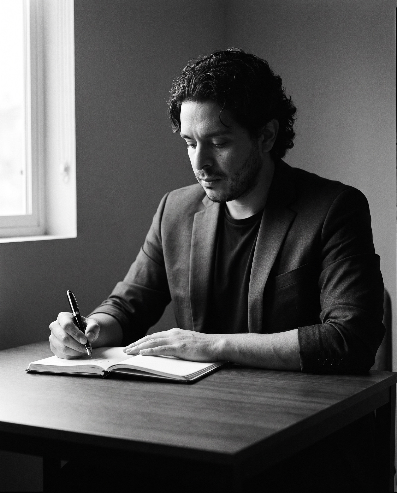
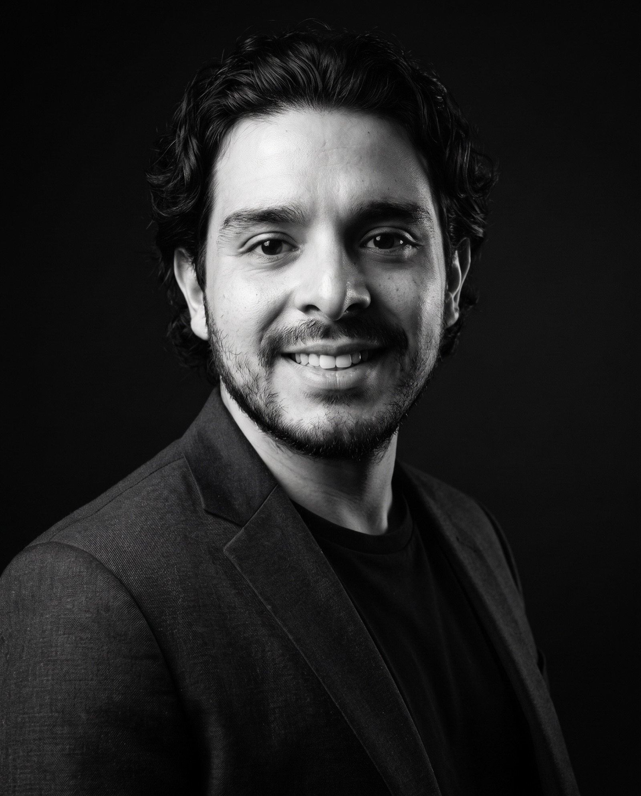

Gregorio Sánchez Calderón · CEO y cofundador de Northpoint · Querétaro, México
Una vida se vivecreando.
Abogado, inversionista y constructor. Dirijo Northpoint, un grupo mexicano de inversión, patrimonio, tecnología, educación, ciudades y filantropía. Hoy estamos fundando la primera ciudad concebida para la era de la inteligencia artificial. Desde México.
Northpoint Cities · Anthropos · primera fase prevista para 2028
01 · Quién soy
Quién soy
Yo ya vi, en mis pensamientos, la versión en la que me voy a convertir. Lo que falta es la parte que más me gusta: ganármela.
Derecho
Licenciado en Derecho
Universidad Anáhuac Querétaro. Fideicomisos, titularidad y protección patrimonial: aprendí a leer contratos antes que gráficas.
Mercados
Wealth management e inversión
Carteras de largo plazo y operativa propia con reglas escritas: la pérdida máxima se define antes de abrir cada posición.
Inteligencia artificial
Fundador de NEXUS Digital
Un estudio que aplica IA y automatización a negocios reales: hoteles, comercios y marcas que necesitan sistemas que funcionen.
Northpoint
CEO y cofundador
Encabezo la estrategia de inversión y la estructura patrimonial del grupo. Autor de los memos de mercado de la mesa.
Timelapse
Lo que ha pasado, en orden.
-
2020
Empiezo Derecho en la Anáhuac Querétaro.
Cinco años leyendo contratos y fideicomisos. Ahí aprendí la pregunta que todavía uso para todo: quién es dueño de qué, y bajo qué reglas.
-
2024
Fincalosa y REMAX, en Morelia.
Asesor jurídico financiero e inmobiliario. Fideicomisos y contratos todos los días, para que cada operación fuera transparente y segura.
-
2025
Me titulo. Y me meto en serio a los mercados.
Me formo en MVD Trading Academy y escribo mis propias reglas de riesgo. Desde entonces, ninguna posición se abre sin saber antes cuánto puedo perder.
-
2026
Northpoint crece. Nace NEXUS Digital.
Northpoint pasa de una mesa de trading a un grupo de seis frentes. NEXUS Digital empieza a aplicar inteligencia artificial a negocios reales.
-
2026Octubre
Northpoint Cities.
Escribo el Manifiesto y el plan de 90 días para Anthropos. Colombia es la primera propuesta.
-
Hoy
Sigo construyendo. Todavía.
El objetivo es el mismo. El plan cambia cuando la realidad lo pide.
02 · Northpoint · CEO y cofundador
La era que empieza necesita un lugar físico donde ocurrir.
Lo estamos construyendo.
La filosofía · tres ideas
Qué pasa con una vida cuando el trabajo deja de ser obligatorio.
Tres ideas sostienen Anthropos: qué hacemos cuando la máquina hace el trabajo, qué pasa cuando la inteligencia concentra el poder, y quién decide qué optimiza. Son las preguntas de esta era. Las respuestas son nuestras.

I · Después del trabajo
La pregunta ya no es cómo nos ganamos la vida. Es para qué es una vida.
Cuando la máquina pueda hacer el trabajo, queda lo que el trabajo nos quitó: ciencia para preguntar, arte para dejar algo que nos sobreviva, la conversación larga y un camino hacia lo que no se mide.
II · Tres puertas
Unirse, organizarse en contra, o irse.
Cuando la inteligencia concentra riqueza y poder, la gente cruza una de tres puertas. Una ciudad es el lugar donde las tres se encuentran. Esa ciudad es la que estamos construyendo, con reglas escritas antes de la primera piedra.
III · Quién sostiene el prompt
La inteligencia va a administrar el mundo material. Alguien le dirá qué optimizar.
La única pregunta que importa es quién, y para quién. Nuestra respuesta: las personas que viven ahí, dueñas del suelo, la energía y el cómputo del lugar donde viven. Quien no es dueño del lugar es su huésped.
Una vida se vive creando, no consumiendo.
Northpoint es un grupo mexicano que desarrolla y opera proyectos de inversión, patrimonio, tecnología, educación y ciudades, con una fundación dedicada al mar.
Seis frentes. Un propósito: que el progreso llegue a más personas y que lo construido perdure.
Y la apuesta mayor: Anthropos, la primera ciudad concebida desde cero para la era de la inteligencia artificial.
Seis frentes · un propósito
Inversión, patrimonio, tecnología, educación, ciudades y filantropía.
01 · Inversión
Ahorro Northpoint
Desde $100 USD, custodia a su nombre, operado por una mesa profesional con reglas escritas.
02 · Patrimonio
Family Office
La oficina privada que ordena lo que una familia ya construyó: inversiones, empresa, inmuebles, impuestos y sucesión.
03 · Tecnología
Trading Journal
La app de escritorio que anota cada trade sola y muestra los números honestos del mes.
04 · Educación
Academia
Aprender a operar como la mesa: clases a su ritmo y programas con certificado.
05 · Ciudades
Northpoint Cities
Anthropos, una ciudad concebida desde cero para la era de la inteligencia artificial.
En estudio · sin predio elegido06 · Filantropía
Fundación Northpoint
Rescate del mar e investigación oceánica en las costas de México.
En formaciónEstado actual · noviembre 2026
Dos cofundadores, un manifiesto y un plan de 90 días.
Colombia es la primera propuesta de Northpoint Cities y la primera fase de Anthropos está prevista para 2028. Lo digo con la ambición al máximo y el estado actual exacto: cada carta, cada hectárea y cada socio se anunciará cuando exista, no antes.
Anthropos es un estudio conceptual, sin predio elegido ni capital comprometido. Nada de esta página es una oferta de inversión. Rendimientos pasados no garantizan rendimientos futuros.
03 · Principios
Principios. En ajuste permanente.
Ray Dalio escribió sus principios para que su vida no fuera un misterio, ni para los demás ni para él. Hago lo mismo: los escribo, los pruebo contra la realidad y los corrijo. Esta es la versión vigente. La siguiente tendrá tachaduras.

- 01
Reglas antes que decisiones.
Toda decisión importante tiene una regla escrita antes. Si no hay regla, no hay decisión: hay impulso.
- 02
El riesgo se define primero.
La pérdida máxima se fija antes de abrir cualquier posición, en los mercados y en los negocios.
- 03
Realidad sobre narrativa.
Un negocio sin números es una historia que me cuento. Mido, comparo y acepto lo que dicen los datos, aunque incomoden.
- 04
Responsabilidad total.
Yo soy el único responsable de la realidad que vivo. Nadie decide por mí y nadie carga mi cuenta.
- 05
El miedo es un empujón.
Cuando algo me da miedo es porque importa. Lo hago con miedo, con reglas y con testigos.
- 06
Elijo mi mesa a propósito.
Soy el promedio de las personas con las que me junto. Aprendo de quien ya subió la montaña que yo apenas veo de lejos.
- 07
Ambición al máximo, estado actual exacto.
Cuento la visión con toda la confianza y el presente sin un gramo de exageración. Si alguien lo verifica, resulta cierto.
- 08
1 % cada día, disfrutando el proceso.
No persigo la cima: subo. El objetivo es el mismo, el plan cambia, y el proceso se disfruta.
Mantenimiento
Reviso esta lista cada trimestre contra lo que de verdad pasó. Lo que deja de ser cierto no se borra: se tacha y se anota por qué. Último ajuste: noviembre de 2026.
Cambios recientes
- Nov 2026Entra el principio 07, tomado del Plan de Marketing de Northpoint Cities.
- Ago 2026Las 24 ideas de los 24 pasan a ser la base de esta lista.
04 · 24 ideas
24 ideas.
El día que cumplí 24 escribí una lista en mi teléfono. Empezaba así: «Hoy cumplo 24 años, y estoy feliz y agradecido con la vida… no ha sido fácil y todavía queda un camino muy importante en esta aventura». La publico casi intacta, porque un documento con fecha vale más que cualquier bio pulida.
Si no lucho por mis sueños, no tengo nada por qué luchar.
Ver las 24
- Si no lucho por mis sueños, no tengo nada por qué luchar.
- Yo soy el único responsable de la realidad que quiero estar viviendo y de la vida que voy a vivir — y vivo.
- Dios es parte de mí y yo soy parte de Dios.
- Primero son mis pensamientos: tengo que tener clara la meta en mi mente para saber a dónde quiero llegar.
- Mi objetivo es el mismo, pero el plan puede cambiar.
- El ambiente influye en el jugador: estar con personas inteligentes y que me inspiran ha sido clave para saber a dónde quiero ir. Eres el promedio de las cinco personas con las que te juntas.
- Mi cerebro es la máquina que mueve al cuerpo; alimentarlo sanamente y cuidar lo que consumo hace la diferencia.
- Al igual que Dios, soy un ser CREADOR.
- El mundo me va a olvidar probablemente en 100 años; disfrutaré la única vida que tengo.
- Si no soy feliz con lo que ya tengo, no seré feliz con lo que el universo me va a dar.
- Enfocarme en mí me ha dado mi paz mental.
- El miedo solo es el empujón que necesitas para hacer las cosas con las que sueñas.
- La sociedad me ha mentido; pensar fuera de la caja me ha dejado ver las oportunidades que están enfrente de mí.
- El mundo puede estar en contra de mis valores y pensamientos, pero está en mí luchar por ellos.
- No traicionarme a mí mismo y ser auténtico es lo que le da sentido a mi vida.
- El amor, la abundancia y la paz mental: un privilegio que sí tengo.
- Confiar en mi intuición ha sido clave para lo que me he convertido hoy.
- Soy lo que pienso la mayoría del tiempo en mi estado subconsciente.
- Todo lo que me proponga lo puedo lograr; solo es cuestión de tiempo y esfuerzo.
- Trabajar por mis sueños es mucho mejor que trabajar para los sueños de alguien más.
- Aprender y tomar en cuenta las acciones de las personas que admiro y que ya han logrado objetivos similares a los que quiero.
- Vine al mundo a ser feliz.
- Yo soy un reflejo de mis pensamientos.
- Disfruto el proceso.
Un año después, varias de esas ideas ya maduraron en los principios de arriba. Otras todavía me las está cobrando la montaña.
05 · Contacto
Si construyes algo, hablemos.
Inversión, patrimonio, tecnología, educación, ciudades o el mar. Si trabajas en alguno de estos frentes, o quieres hacerlo, escríbeme.
